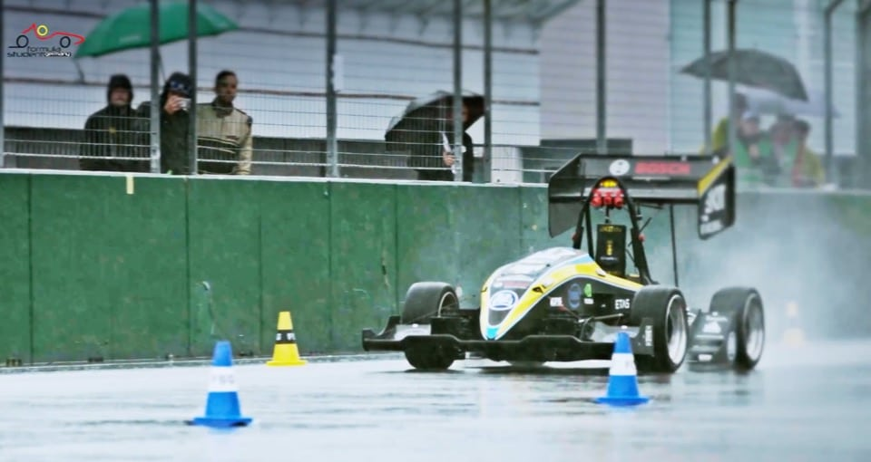
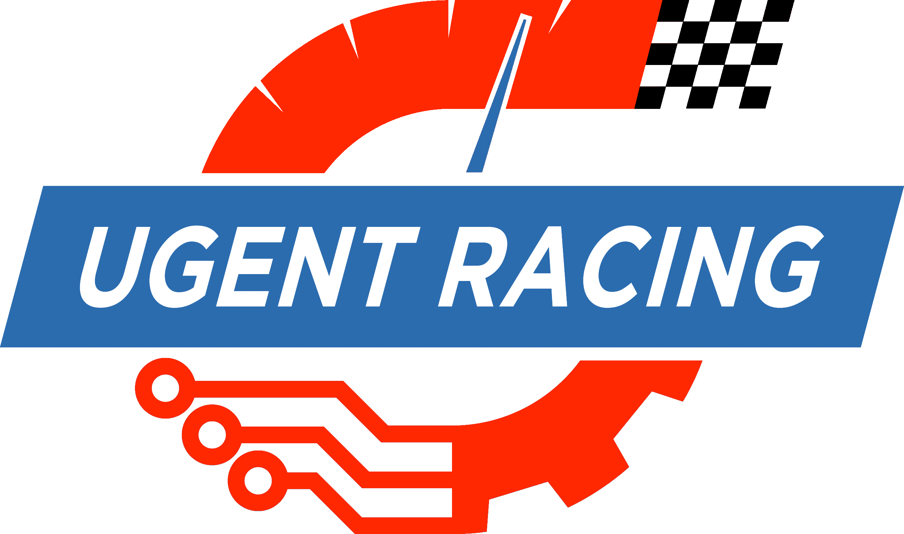

Autonomous racecar analytics using drones
Problem statement
Autonomous racecars in the formula student competition should be able to race on unknown tracks without having access to precise external navigation tools such as GPS. Therefore, the cars need to build up an internal track layout via sensing of the surrounding environment using either a camera and/or a lidar scanner. The accuracy of this technique is hard to validate since the ground truth is often not measured.
To obtain a high accurate track layout map, a mapping solution using drone imagery is proposed. This means that a drone will be used to automatically detect the cones that define the circuit and create a map that will later on be compared to the internal map of the car. The drone should also track the car, which will provide insights in the localization accuracy as well as provide additional metrics such as speed and slipping.

Goal
The primary goal of the thesis is to map the entire track accurately with minimal human efforts. This includes: 1) optimizing the drone’s trajectory for full coverage, 2) detecting cones and the track layout automatically from drone imagery to provide a clear layout of the entire track, and 3) developing a car tracking algorithm and additional metrics from the car’s motion such a speed and slipping.

This thesis is being conducted by Yarne De Munck (Yarne.DeMunck@UGent.be).